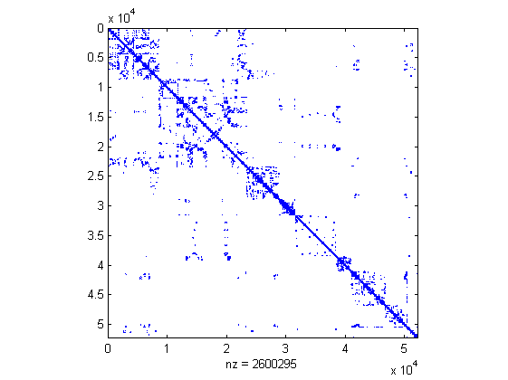
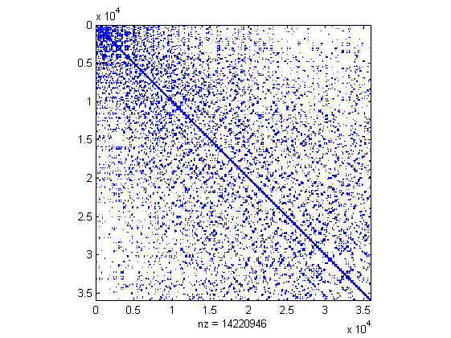

DEMOINTLAB_LARGER Some larger examples with INTLAB
Designed and written by Siegfried M. Rump, head of the Institute for Reliable Computing, Hamburg University of Technology. For more information, see www.ti3.tuhh.de
Contents
- Welcome to INTLAB, the Matlab toolbox for Reliable Computing
- Dense linear systems
- Ill-conditioned dense linear systems
- Sparse linear systems I
- Sparse linear systems II
- Larger least squares problems
- Sparse least squares problems
- Verified solution of a larger nonlinear system
- An optimization problem in 100 unknowns
- An optimization problem in 5000 unknowns
- Enjoy INTLAB
Welcome to INTLAB, the Matlab toolbox for Reliable Computing
Following are some larger examples using INTLAB, the Matlab toolbox for Reliable Computing. All computations are on my 2.8 GHz Laptop using Matlab R2010b under Windows.
Dense linear systems
The following generates a dense linear system with n=5000 unknowns randomly with solution approximately all 1's. Since random matrices are generally well-conditioned, this is no real challenge concerning verification of the result.
Here and in the following we display the computing time for the Matlab built-in solver and for our verification routines. Note that this compares apples with oranges: the results of the verification routine are mathematically proved to be correct, including all rounding errors and the proof of non-singularity of the input matrix, wheras approximations are sometimes not correct, even without warning (see e.g. the section "Larger least squares problems").
Following the computing time for the Matlab solver A\b and for the verification INTLAB algorithm verifylss, some components of the solution as well as the minimum and median number of correct digits is displayed.
format short n = 5000; A = randn(n); x = ones(n,1); b = A*x; tic x = A\b; disp(sprintf('Time for the built-in Matlab solver %5.1f [sec]',toc)) tic X = verifylss(A,b); disp(sprintf('Time for the verification algorithm %5.1f [sec]',toc)) v = [1:3 n-2:n]; format long disp('Inclusion of the first and last three components') X(v) format short r = relacc(X); disp('Minimum and median number of correct digits') [min(r) median(r)]
Time for the built-in Matlab solver 6.1 [sec] Time for the verification algorithm 34.9 [sec] Inclusion of the first and last three components intval ans = [ 0.99999999999834, 0.99999999999840] [ 1.00000000000017, 1.00000000000019] [ 1.00000000000048, 1.00000000000050] [ 0.99999999999976, 0.99999999999978] [ 1.00000000000022, 1.00000000000024] [ 0.99999999999983, 0.99999999999985] Minimum and median number of correct digits ans = 13.7178 14.3111
Since the right hand side b is computed as A*x in floating-point, the true solution is approximately the vector of 1's, but not exactly. To force the solution to include the vector of 1's, the right hand side is computed as an inclusion of A*b. Such methods are often used as tests for verification algorithms.
bb = A*intval(ones(n,1)); tic X = A\bb; T = toc v = [1:3 n-2:n]; format long X(v) format short r = relacc(X); disp('Minimum and median number of correct digits') [min(r) median(r)]
T =
49.5550
intval ans =
[ 0.99999999243328, 1.00000000757082]
[ 0.99999999930340, 1.00000000069630]
[ 0.99999999800774, 1.00000000199116]
[ 0.99999999850756, 1.00000000149311]
[ 0.99999999789787, 1.00000000210143]
[ 0.99999999861588, 1.00000000138472]
Minimum and median number of correct digits
ans =
8.2433 8.8429
The computing time is roughly the same, but the inclusion is less accurate. However, the right hand side is now an interval vector, and the solution of all linear systems with a right hand side within bb is included.
For cond(A)~10^k, according to the well-known rule of thumb in numerical analyis, the accuracy of the inclusion should be roughly the number of correct digits in bb minus k. This is indeed true.
accX = median(r) median(relacc(bb)) - log10(cond(A))
accX =
8.8429
ans =
9.1628
Ill-conditioned dense linear systems
Next an ill-conditioned linear system with n=5000 unknowns is generated with solution again roughly the vector of 1's. The condition number is approximately 10^14.
The computing time for the Matlab solver A\b and for the verification INTLAB algorithm verifylss, some components of the solution as well as the minimum and median number of correct digits is displayed.
The condition number implies that the accuracy of the inclusion should be roughly 16-14 = 2 correct digits. This indeed true.
format short n = 5000; A = randmat(n,1e14); x = ones(n,1); b = A*x; tic X = verifylss(A,b); disp(sprintf('Time for the verification algorithm %5.1f [sec]',toc)) v = [1:3 n-2:n]; format long _ disp('Inclusion of the first and last three components') X(v) format short r = relacc(X); disp('Minimum and median number of correct digits') [min(r) median(r)]
Time for the verification algorithm 49.3 [sec]
Inclusion of the first and last three components
intval ans =
0.977___________
1.017___________
1.035___________
1.015___________
1.008___________
1.03____________
Minimum and median number of correct digits
ans =
2.9663 4.4961
Sparse linear systems I
By the principle of the used method, mainly symmetric positive definite matrices can be treated. The performance for general sparse matrices is not good; alas, basically no better method is known.
Consider for example matrix #356 from the Florida matrix market of dimension 52,329 with 2.6 million nonzero elements. The matrix looks as follows.
Prob = UFget(356); A = Prob.A; n = size(A,1) b = A*ones(n,1); close spy(A)
n =
52329
 We display the timing the Matlab solver and the verification routine verifylss, and show the minimum and median accuracy of the inclusion. Note that the estimated condition number is 2e14.
CndEst = condest(A) tic x = A\b; disp(sprintf('Time for the built-in Matlab solver %5.1f [sec]',toc)) tic X = verifylss(A,b); disp(sprintf('Time for the verification algorithm %5.1f [sec]',toc)) v = [1:3 n-2:n]; format long disp('Inclusion of the first and last three components') X(v) format short r = relacc(X); disp('Minimum and median number of correct digits') [min(r) median(r)]
CndEst =
2.2282e+014
Time for the built-in Matlab solver 39.6 [sec]
Time for the verification algorithm 73.3 [sec]
Inclusion of the first and last three components
intval ans =
1.0000__________
1.0000__________
1.000___________
1.0000__________
1.0000__________
1.0000__________
Minimum and median number of correct digits
ans =
1.2245 4.2348
Sparse linear systems II
Sometimes the verification routine is about as fast or even faster than the built-in Matlab solver. The test matrix is #938 from the Florida matrix market. This matrix has dimension 36,000 with about 14 million nonzero elements.
Prob = ufget(938); A = Prob.A; n = size(A,1) b = A*ones(n,1); close spy(A)
n =
36000
 The estimated condition number is about 2.5e7. Now the verification routine is about as fast as the approximate solver.
CndEst = condest(A) tic x = A\b; disp(sprintf('Time for the built-in Matlab solver %5.1f [sec]',toc)) tic X = verifylss(A,b); disp(sprintf('Time for the verification algorithm %5.1f [sec]',toc)) v = [1:3 n-2:n]; format long disp('Inclusion of the first and last three components') X(v) format short r = relacc(X); disp('Minimum and median number of correct digits') [min(r) median(r)]
CndEst =
2.4082e+007
Time for the built-in Matlab solver 559.6 [sec]
Time for the verification algorithm 584.8 [sec]
Inclusion of the first and last three components
intval ans =
1.000000________
1.000000________
1.000000________
1.000000________
1.000000________
1.000000________
Minimum and median number of correct digits
ans =
6.9254 6.9254
The accuracy of the inclusion is as expected. We mention that verifylss applies by default an a priori minimum degree sorting. Usually this accelarates the method, but not always. For completeness we list the computing time of the approximate solver with this preordering.
tic
p = symamd(A);
x = A(p,p)\b(p);
disp(sprintf('Time for the built-in Matlab solver with preordering %5.1f [sec]',toc))
Time for the built-in Matlab solver with preordering 78.0 [sec]
Larger least squares problems
We first generate a dense 5000x500 matrix with condition number 1e12 to solve the corresponding least squares problem. The right hand side is the vector of 1's. The computing time of the built-in Matlab solver and the verification routine is displayed.
format short m = 5000; n = 500; A = randmat([m n],1e12); b = ones(m,1); tic x = A\b; disp(sprintf('Time for the built-in Matlab solver %5.1f [sec]',toc)) tic X = verifylss(A,b); disp(sprintf('Time for the verification algorithm %5.1f [sec]',toc))
Time for the built-in Matlab solver 1.0 [sec] Time for the verification algorithm 9.2 [sec]
Next we show some components of the approximate solution computed x by Matlab and the verified inclusion X by INTLAB. Note that some 15 digits are verified to be correct, so we can judge that the Matlab approximation has only about 1 or 2 correct digits. The Matlab approximation comes without warning.
v = [1:3 n-2:n]; format long disp('First and last three components: approximation and inclusion') for i=v disp(sprintf('%14.4e %53s',x(i),infsup(X(i)))) if i==3, disp([blanks(30) '...']), end end format short r = relacc(X); disp('Minimum and median number of correct digits') [min(r) median(r)]
First and last three components: approximation and inclusion
6.4275e+010 [ 6.364498797696520e+010, 6.364498797696532e+010]
-9.3569e+010 [ -9.252586190352669e+010, -9.252586190352658e+010]
-8.9917e+010 [ -8.806273001583330e+010, -8.806273001583322e+010]
...
-1.1260e+011 [ -1.116262256209265e+011, -1.116262256209263e+011]
-9.4499e+010 [ -8.902450124153560e+010, -8.902450124153555e+010]
1.1312e+011 [ 1.053081281905125e+011, 1.053081281905126e+011]
Minimum and median number of correct digits
ans =
15.5104 16.4955
Sparse least squares problems
Following we display the timing and accuracy of the built-in Matlab routine and the verification routine verifylss for a larger least squares problem, namely matrix #2201. This is a problem with 37932 for 331 unknowns and about 130 thousand nonzero elements. The right hand side is again the vector of 1's.
Prob = ufget(2201); A = Prob.A; [m n] = size(A) b = ones(m,1); tic x = A\b; disp(sprintf('Time for the built-in Matlab solver %5.1f [sec]',toc)) tic X = verifylss(A,b); disp(sprintf('Time for the verification algorithm %5.1f [sec]',toc)) v = [1:3 n-2:n]; format long disp('Inclusion of the first and last three components') X(v) format short r = relacc(X); disp('Minimum and median number of correct digits') [min(r) median(r)]
m =
37932
n =
331
Time for the built-in Matlab solver 0.8 [sec]
Time for the verification algorithm 3.6 [sec]
Inclusion of the first and last three components
intval ans =
0.86939173774958
0.91891829446876
0.93916745272555
-0.99656428275776
-0.79264335897383
0.20386414427256
Minimum and median number of correct digits
ans =
16.3189 16.9209
In this case we can judge from the inclusion that about 13 digits of the approximation are correct.
Verified solution of a larger nonlinear system
The following example was proposed by Abbot and Brent and is implemented in the function test.
function y = test(x) % Abbot/Brent 3 y" y + y'^2 = 0; y(0)=0; y(1)=20; % approximation 10*ones(n,1) % solution 20*x^.75 y = x; n = length(x); v=2:n-1; y(1) = 3*x(1)*(x(2)-2*x(1)) + x(2)*x(2)/4; y(v) = 3*x(v).*(x(v+1)-2*x(v)+x(v-1)) + (x(v+1)-x(v-1)).^2/4; y(n) = 3*x(n).*(20-2*x(n)+x(n-1)) + (20-x(n-1)).^2/4;
An inclusion of the solution for 5000 unknowns is computed. The timing, some components of the inclusion and the accuracy of the solution is displayed.
n = 5000; tic X = verifynlss(@test,10*ones(n,1)); disp(sprintf('Time for the verification algorithm %5.1f [sec]',toc)) v = [1:3 n-2:n]; format long disp('Inclusion of the first and last three components') X(v) format short r = relacc(X); disp('Minimum and median number of correct digits') [min(r) median(r)]
Time for the verification algorithm 6.0 [sec] Inclusion of the first and last three components intval ans = 0.03106851969020 0.05424460056172 0.07452016877319 19.99100091446536 19.99400075965309 19.99700045481880 Minimum and median number of correct digits ans = 16.0514 16.6535
An optimization problem in 100 unknowns
This problem is taken from
http://www.sor.princeton.edu/~rvdb/ampl/nlmodels/cute/bdqrtic.mod
Source: Problem 61 in
A.R. Conn, N.I.M. Gould, M. Lescrenier and Ph.L. Toint,
"Performance of a multifrontal scheme for partially separable optimization",
Report 88/4, Dept of Mathematics, FUNDP (Namur, B), 1988.
Copyright (C) 2001 Princeton University
All Rights Reserved
see bottom of file test_h.mThe model problem is
N = length(x); % model problem: initial approximation x=ones(N,1);
I = 1:N-4;
y = sum( (-4*x(I)+3.0).^2 ) + sum( ( x(I).^2 + 2*x(I+1).^2 + ...
3*x(I+2).^2 + 4*x(I+3).^2 + 5*x(N).^2 ).^2 );This function is evaluated by
index = 2; y = test_h(x,index);
We first solve the corresponding nonlinear system in only 100 unknowns to compare with Matlab's built-in fminsearch.
n = 100; index = 2; disp('Floating-point approximation by fminsearch with restart') optimset.Display='off'; x = ones(n,1); tic for i=1:5 x = fminsearch(@(x)test_h(x,index),x,optimset); y = test_h(x,index); disp(sprintf('iteration %1d and current minimal value %7.1f',i,y)) end disp(sprintf('Time for fminsearch with 5 restarts %5.1f [sec]',toc)) disp(' ') x = ones(n,1); tic X = verifynlss('test_h',x,'h',0,index); disp(sprintf('Time for the verification algorithm %5.1f [sec]',toc)) Y = test_h(X,index); disp(sprintf('Minimal value for stationary point %7.1f',Y.mid)) r = relacc(X); disp('Minimum and median number of correct digits of stationary point') [min(r) median(r)]
Floating-point approximation by fminsearch with restart iteration 1 and current minimal value 6733.3 iteration 2 and current minimal value 2529.4 iteration 3 and current minimal value 587.9 iteration 4 and current minimal value 406.9 iteration 5 and current minimal value 378.9 Time for fminsearch with 5 restarts 18.4 [sec] Time for the verification algorithm 0.2 [sec] Minimal value for stationary point 378.8 Minimum and median number of correct digits of stationary point ans = 15.8753 15.9545
Although restarted 5 times, the approximation by fminsearch is still not very accurate. The built-in Matlab routine fminsearch uses the Nelder-Mead algorithm without derivative, thus it is also slow even for few unknowns.
An optimization problem in 5000 unknowns
Next we solve the previous nonlinear system in 5000 unknowns with verification. The given starting vector is again x = ones(n,1). Note that during the computation x will be a vector of Hessians, each carrying a Hessian matrix, in total 5000^3 = 1.25e11 elements or 1 TeraByte - if not stored sparse.
n = 5000; index = 2; tic X = verifynlss('test_h',ones(n,1),'h',0,index); disp(sprintf('Time for the verification algorithm %5.1f [sec]',toc)) r = relacc(X); disp('Minimum and median number of correct digits') [min(r) median(r)]
Time for the verification algorithm 33.0 [sec] Minimum and median number of correct digits ans = 15.8753 15.9545
Note the high accuracy of the result. Mathematically, the interval vector X is proved to contain a stationary point xx of the test function. To verify it is truely a (local) minimum, the corresponding Hessian at xx must be positive semidefinite.
tic
y = test_h(hessianinit(X),index);
isLocalMinimum = isspd(y.hx)
disp(sprintf('Time for the verification algorithm %5.1f [sec]',toc))
isLocalMinimum =
1
Time for the verification algorithm 2.7 [sec]
The latter command verified that the Hessian at all points in X is s.p.d., among them at the stationary point xx.
Enjoy INTLAB
INTLAB was designed and written by S.M. Rump, head of the Institute for Reliable Computing, Hamburg University of Technology. Suggestions are always welcome to rump (at) tuhh.de